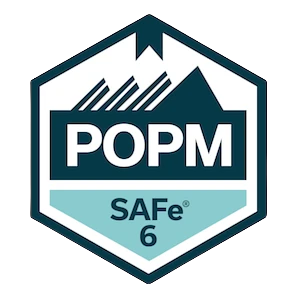
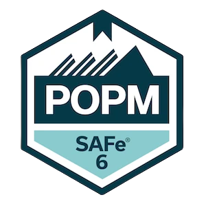

Design Thinking Coach, User Experience Designer, Informatiker, Startup-Enthusiast, Referent, systematischer Organisationsentwickler in Ausbildung, Ehemann, Vater von 2 erwachsenen Kindern & Weltreisender
Ich bin akkreditierter BAFA (Bundesamt für Wirtschaft und Ausfuhrkontrolle) Berater (#163217).
Es gibt zahlreiche Fördermöglichkeiten von Bund, Ländern und EU. Zum Beispiel das aktuelle Mittelstandsprogramm "Digital Jetzt"
Meine Angebote richten sich immer nach dem Bedarf und sind so individuell wie ihre Firma und können
daher in der Regel erst nach einem kostenlosen Erstgespräch erstellt werden.
Größere Projekte biete ich immer in Phasen an, nach denen sie jeweils Anpassungen machen oder ggf. auch abbrechen können.
Gerne können sie hier einen Termin vereinbaren.
Komplette Übernahme der Digitalen Transformations Initiative im Unternehmen als interims Chief Digital Officer
Strategieworkshops zur Problem- und Potenzialanalyse für Digitale Transformation und Erstellung einer Roadmap
Längerfristige Projektunterstützung - nach dem Start des Teams unterstütze ich mit weiteren Workshops und methodischer Begleitung der Mitarbeiter
Themenspezifische Workshops und Unterstützung wie z.B. Agile Methoden und Gestaltung von Business Modellen
Unterstützung von Start-ups in der frühen Phase und beim Scaling durch: